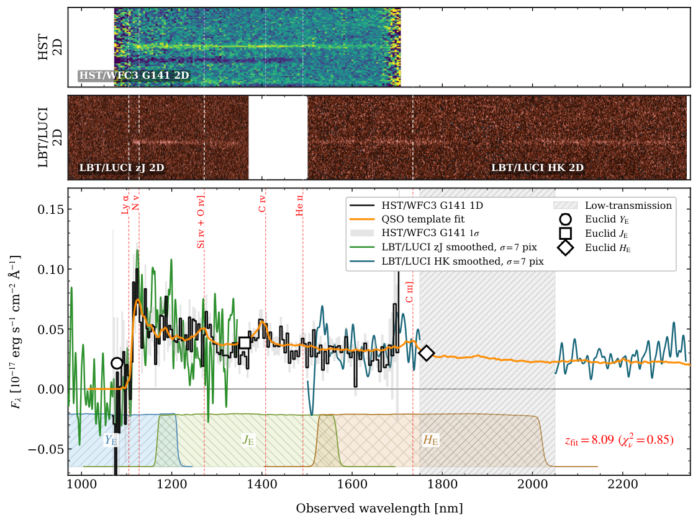
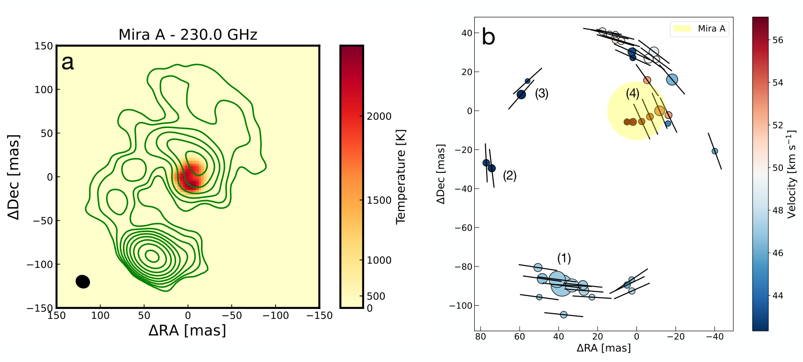

ホーム / 天文学ニュースウォッチ 中国の研究動向（9件） 世界の研究動向（5件） 情報源と編集方針 記事の目次 近傍136銀河の運動から探る、中心部の暗黒物質 中性水素の電波で、45億年前の宇宙の構造を測る 星の元素組成から、天の川銀河の古い円盤に133の集団候補 隕石に残った三つの粒が示す、初期太陽系の物質移動 宇宙重力波観測計画「天琴」、初回の科学目標評価を完了 LAMOSTの新しい巡天で、金属の少ない星を見つけやすく 火星探査機の電波で、太陽風の中を戻る波の兆候を捉える 天の川の円盤から離れた方向に、細長いガンマ線源 電波観測の補正を改良し、1246個の電波源をカタログに収録 宇宙誕生から約4億5000万年後の最遠のリトル・レッド・ドット有力候補 ガンマ線源を挟む分子雲に、過去のジェットを示す細い筋 宇宙誕生から約6億3000万年後のクエーサー、中心のブラックホールは太陽の約3億6000万倍と推定 カシオペヤ座Aの塵が伝える、爆発前の星の内部 赤色巨星ミラAの周りに広がる巨大なガスの輪 中国の研究動向
発表 2026年11月27日 · 銀河・暗黒物質
近傍136銀河の運動から探る、中心部の暗黒物質
上海天文台、国家天文台ほか
銀河に含まれる暗黒物質の量は、星やガスの動きから推定できます。上海天文台を中心とする研究チームは、近傍の136銀河について、銀河内部の星の動きと、中国の大型電波望遠鏡FASTなどで捉えた外側の水素ガスの動きを組み合わせ、中心部から外縁までの質量分布を求めました。
質量の小さい銀河ではシミュレーションとおおむね一致しました。重い銀河ほど、中心付近で推定された暗黒物質の密度が低く、予測との差が外側まで及びました。銀河を形づくる計算で、星やガスが暗黒物質の分布に及ぼす影響をどのように扱うかを検証する材料になります。
上海天文台（中国語） 科学網（中国新聞網） 原著論文｜Nature Astronomy
発表 2026年11月26日 · 宇宙論・電波観測
中性水素の電波で、45億年前の宇宙の構造を測る
MeerKLASS共同研究チーム、上海天文台ほか
南アフリカの電波望遠鏡MeerKATを使う国際チームが、約45億年前に中性水素が放った電波の強度分布から、宇宙の大きなスケールでガスがどれほど集まっていたかを測りました。対象は赤方偏移0.42。水素が放った波長約21センチの電波は、宇宙の膨張によって、地球に届くまでに約30センチに伸びています。
チームは望遠鏡のデータを四つに分け、別々に処理した画像に共通するゆらぎを調べました。装置の雑音などを抑え、水素の集まり方を捉えました。信号対雑音比は6.2で、検出した信号の大きさが測定のばらつきの目安の6.2倍だったことを示します。上海天文台の研究者は、測定の土台となる観測データの較正を主導しました。
上海天文台（中国語） 原著論文｜MNRAS 原著プレプリント
発表 2026年11月25日 · 銀河系・恒星
星の元素組成から、天の川銀河の古い円盤に133の集団候補
中国科学院国家天文台ほか
中国科学院国家天文台を中心とするチームが、天の川銀河の古い円盤成分に属する赤色巨星8万7275個を調べました。郭守敬望遠鏡（LAMOST）が測ったスペクトルから18元素の量の比を求め、組成の近い星をまとめると、4642個の星が133の集団候補に分かれました。
鉄の割合が近い星の間にも、中性子を取り込む反応でつくられる元素には目立った違いがありました。元素の組成が似ている星は、元素の蓄積が似た経過をたどったガスから生まれた可能性があります。同じ場所で生まれたかどうかを調べるには、星の運動なども手がかりになります。
中国科学院の大型研究施設情報（中国語） 原著プレプリント｜ApJ掲載受理
発表 2026年11月25日 · 太陽系の形成
隕石に残った三つの粒が示す、初期太陽系の物質移動
紫金山天文台ほか
紫金山天文台などの研究チームは、三つの炭素質隕石を調べ、その中からマンガンに富む球粒を三つ見つけました。球粒は、太陽の周りにガスと塵の円盤があった時代に、固体の一部が溶けて丸まり、冷えて固まった粒です。三つの粒には、周囲とは異なる酸素同位体の組成が見られました。
放射性元素の崩壊を利用した年代測定は、太陽系が生まれてから約100万年で粒ができた可能性を示しています。研究チームは、太陽に比較的近い領域でできた粒の一部が円盤の外側に運ばれ、現地の物質とともに隕石の母天体に取り込まれたと考えています。
紫金山天文台（中国語） 中国科学院上海分院（中国語） 原著論文｜Earth and Planetary Science Letters
発表 2026年11月26日 · 宇宙重力波観測計画
宇宙重力波観測計画「天琴」、初回の科学目標評価を完了
中山大学天琴センター
中山大学の天琴センターは、宇宙重力波観測計画「天琴」の科学目標をまとめた報告書が刊行され、最初の評価を終えたと発表しました。計画では、地球を回る3機の衛星の間をレーザーで結び、重力波が通り過ぎる際に生じるごく小さな距離の変化を測ります。
天の川銀河にある白色矮星などの連星や、銀河の中心にある大質量ブラックホールの連星が主な観測対象です。報告書には、これらの天体を調べるために装置が備えるべき感度や、ほかの宇宙観測計画と連携する場合の科学目標が整理されています。
中山大学天琴センター（中国語） 科学網
発表 2026年11月25日 · 恒星・分光観測
LAMOSTの新しい巡天で、金属の少ない星を見つけやすく
北京師範大学、中国科学院国家天文台ほか
中国の郭守敬望遠鏡（LAMOST）で天の川銀河の星を調べる第3期の分光巡天について、北京師範大学と国家天文台などのチームが、対象の選び方と観測の進捗を報告しました。欧州の位置天文衛星ガイアの資料を使って星そのものの色と明るさを見積もり、これまで観測の機会が少なかった種類の星を優先しました。
2025年6月までに得た低分解能のスペクトルは約153万本で、観測対象は約126万天体です。天文学では、水素とヘリウムより重い元素をまとめて「金属」と呼びます。この研究では、水素に対する鉄の割合が太陽の10分の1未満の星を、金属の少ない星に分類しました。調べたA・F・G・K型の星のうち、こうした星の割合は前の2期の3.8％から9.0％に増えました。銀河が若かったころの元素組成を残す星を、より多く調べられるようになります。
中国科学院の大型研究施設情報（中国語） 原著論文｜Science China Physics, Mechanics & Astronomy
発表 2026年11月24日 · 太陽・太陽風
火星探査機の電波で、太陽風の中を戻る波の兆候を捉える
上海天文台、北京大学ほか
火星探査機「天問1号」が地球から見て太陽の近くを通ったとき、探査機から届く電波は、太陽風が加速する領域を横切りました。上海天文台と北京大学などの研究チームは、この電波を複数の地上局で受信した記録を使い、太陽風の密度の変化が伝わる向きを調べました。
太陽から外へ進む変動に加え、内側へ向かう変動が見つかりました。両者の速度の関係は、外向きの波の一部が反射したとする説明と整合します。探査機の通信電波を使う手法で、太陽の近くを流れるガスの中で波がどう伝わるかを地上から探れます。
上海天文台（中国語） 原著論文｜The Astrophysical Journal
発表 2026年11月23日 · 高エネルギー天体
天の川の円盤から離れた方向に、細長いガンマ線源
LHAASO共同研究チーム、中国科学院高能物理研究所
中国の高海抜宇宙線観測施設LHAASOが、天の川銀河の円盤に沿う銀河面から南へ約17.5度離れた空に、高エネルギーのガンマ線を放つ領域を見つけました。広がりは長さ4.6度、幅0.45度で、帯の中に明るい部分が二つあります。検出した光子の最高エネルギーは760テラ電子ボルトでした。
放射域の端に位置するミリ秒パルサーJ0218+4232が、粒子を加速する天体の候補に挙がっています。この星とガンマ線源の関係が確かめられれば、高速で回転する中性子星の周囲で、粒子がどこまで高いエネルギーを得られるかを調べる例になります。
中国科学院高能物理研究所（中国語） LHAASO（中国語、11月25日） 科学網 原著論文｜Science Bulletin 原著プレプリント
発表 2026年11月23日 · 電波観測技術
電波観測の補正を改良し、1246個の電波源をカタログに収録
上海天文台、国家天文台
上海天文台と国家天文台の研究者は、中国の低周波電波望遠鏡21CMAで2013年に観測した24時間分のデータを使い、地球の自転軸を北へ延ばした先にある天の北極の周り、半径5度の範囲から1246個の電波源をまとめました。電離層の乱れやアンテナの感度の違いが観測に及ぼす影響を、電波が届く方向に応じて補正しました。その結果、明るい電波源の周囲に現れる筋状の模様が減り、かすかな電波源を見つけやすくなりました。
2016年版のカタログと共通する電波源は611個で、新しい版には635個が加わりました。宇宙初期の水素が出した微弱な電波を探す際には、手前に見えるこうした電波源を詳しく把握する必要があります。
上海天文台（中国語） 上海天文台（英語） 原著論文｜MNRAS
世界の研究動向
発表 2026年11月25日 · 初期宇宙・銀河
宇宙誕生から約4億5000万年後の最遠のリトル・レッド・ドット有力候補
東京大学・カブリ数物連携宇宙研究機構ほか
東京大学の研究者が主導するチームは、ジェイムズ・ウェッブ宇宙望遠鏡で見つけた小さく赤い天体を分光観測し、赤方偏移が10.36であることを確かめました。距離が分光観測で確かめられたリトル・レッド・ドットの候補の中で、これまでで最も遠く、宇宙が誕生してから約4億5000万年後の姿が見えています。
こうした天体は「リトル・レッド・ドット」と呼ばれ、物質を取り込んで成長するブラックホールが光っている例があると考えられています。今回の天体の赤さや小ささはその候補にふさわしく、光の出どころを詳しく調べることで、初期のブラックホールが育つ環境を探れます。
カブリ数物連携宇宙研究機構 原著論文｜The Astrophysical Journal Letters 原著プレプリント
発表 2026年11月25日 · 星間ガス・宇宙線
ガンマ線源を挟む分子雲に、過去のジェットを示す細い筋
名古屋大学、岐阜大学ほか
名古屋大学と岐阜大学などの研究チームは、天の川銀河のガンマ線源HESS J1023−575の周囲をアルマ望遠鏡で調べました。分子雲の内部には、幅約1.5光年、長さ約30〜60光年の細い筋が何本も並んでいました。
筋の形や間隔は、ジェットが周囲の原子ガスを圧縮する数値計算の結果とよく似ています。チームは、ブラックホールや中性子星を含む連星が過去にジェットを噴き出し、周囲のガスを押し集めたと解釈しました。分子雲の形を手がかりに、現在はジェットが暗くなった宇宙線加速源も探せるかもしれません。
名古屋大学（11月25日） ALMA日本語版（11月26日） 原著論文｜PASJ
発表 2026年11月24日 · 初期宇宙・クエーサー
宇宙誕生から約6億3000万年後のクエーサー、中心のブラックホールは太陽の約3億6000万倍と推定
欧州宇宙機関、マックス・プランク天文学研究所ほか
欧州の宇宙望遠鏡ユークリッドが広い空を調べたデータから、研究チームは遠方の銀河の中心で強い光を放つクエーサーJ1504+6252を見つけました。地上望遠鏡やジェイムズ・ウェッブ宇宙望遠鏡などによる追観測で赤方偏移8.13と確認され、宇宙が誕生してから約6億3000万年後に見える天体だと分かりました。
中心のブラックホールの質量は、スペクトルの分析から太陽の約3億6000万倍と推定されています。この時代にこれほどの質量に達していたことは、ブラックホールの種が生まれたときの質量や、その後に周囲のガスを取り込んだ速さを考えるうえで制約になります。
マックス・プランク天文学研究所（11月24日） 欧州宇宙機関（11月24日） 科学網（科技日報、11月26日） 原著論文｜Astronomy & Astrophysics 原著プレプリント

クエーサーJ1504+6252のスペクトル。波長約1100ナノメートルで光が急に弱くなる特徴を、地上と宇宙の望遠鏡で捉えました。 Wolf et al. (2026), arXiv:2611.31385v1, Fig. 2 · 図版の出典 · CC BY 4.0
発表 2026年11月23日 · 超新星・星間塵
カシオペヤ座Aの塵が伝える、爆発前の星の内部
コロンビア大学、NASA、ESAほか
ジェイムズ・ウェッブ宇宙望遠鏡が、超新星の残骸カシオペヤ座Aに残る塵を、中間赤外線のスペクトルで調べました。爆発で飛び散った物質のうち、あるかたまりでは二酸化ケイ素の塵が多く、別のかたまりでは炭素の塵が多いことが分かりました。
大質量星の内部には、異なる元素の核融合が進む層ができます。研究チームが塵の組成を星の進化モデルと照らし合わせたところ、爆発に先立って異なる層の物質が混ざったとするモデルで、観測の特徴を説明できました。残骸の場所ごとに塵を調べることで、爆発前の星の内部を推し量れます。
NASA Science（英語） ESA/Webb（英語） 原著論文｜The Astrophysical Journal Letters
発表 2026年11月23日 · 恒星進化・質量放出
赤色巨星ミラAの周りに広がる巨大なガスの輪
チャルマース工科大学ほか
地球から約330光年にある連星系の主星、赤色巨星ミラAで、表面の激しい活動に続き、星の外へ広がるガスの輪が捉えられました。チャルマース工科大学などの研究チームは、アルマ望遠鏡でミラAを約10年にわたり追い、2023年に星の表面で起きた増光と、2025年に見えたガスの構造を結び付けました。
研究チームは、磁場が関わる大規模な噴出によってガスの輪ができたと解釈しています。赤色巨星は普段も風としてガスを放出しますが、今回のような突発的な活動も、星がつくった元素を周囲へ運ぶ経路の一つと考えられます。
チャルマース工科大学（英語） 原著プレプリント 関連原著プレプリント｜ミラ表面の周期的活動 原著論文｜Astronomy & Astrophysics

一酸化ケイ素の分子が特定の波長の電波を増幅する現象を「メーザー」と呼びます。左の緑の等高線は、速度ごとに測ったメーザー放射を合計した強さを示します。右の点は放射が見つかった位置で、色は視線方向の速度、黒い線分は直線偏光の向きを表します。 Vlemmings et al. (2026), arXiv:2608.23695v2, Fig. 2 · 図版の出典 · CC BY 4.0
情報源と編集方針
大学・研究機関の発表と原著論文を中心に、科学網などの科学報道も参照しています。各記事の発表日は、参照した公式発表や報道の掲載日です。研究の観測日や論文公開日とは異なる場合があります。
記事は公開情報をもとに、AIを利用して日本語でまとめています。詳しい内容は各記事の原典をご覧ください。
バックナンバー